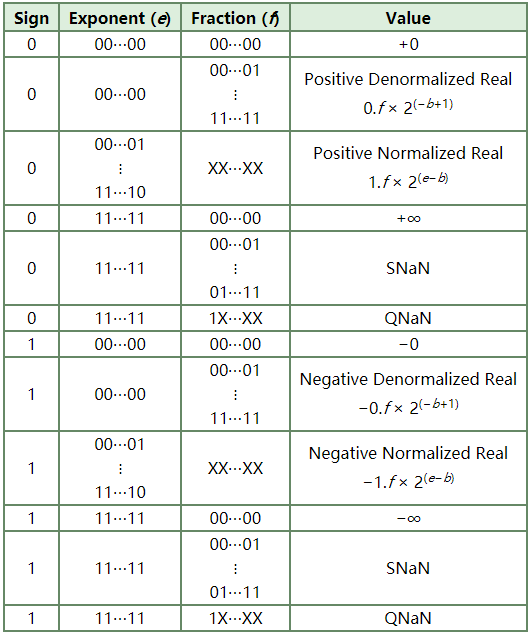

IEEE Standard 754 Floating Point Numbers
IEEE Standard 754 floating point is the most common representation today for real numbers on computers, including Intel-based PC’s, Macintoshes, and most Unix platforms. This article gives a brief overview of IEEE floating point and its representation. Discussion of arithmetic implementation may be found in the book mentioned at the bottom of this article.
《IEEE Standard 754 floating point》是现如今在计算机表示实际数最普遍的方法，包括intel平台的个人电脑，麦金塔电脑和最广泛的Unix平台.本文对其作了简要的概述和举例表示。关于算术表示的讨论请参阅本文末尾提到的书籍。
Author（原作者）: Steve Hollasch
You may visit the site（你可以访问原始链接）: https://steve.hollasch.net/cgindex/coding/ieeefloat.html
What Are Floating Point Numbers?
There are several ways to represent real numbers on computers. Fixed point places a radix point somewhere in the middle of the digits, and is equivalent to using integers that represent portions of some unit. For example, one might represent 1/100ths of a unit; if you have four decimal digits, you could represent 10.82, or 00.01. Another approach is to use rationals, and represent every number as the ratio of two integers.
什么是浮点数？
在计算机中有多种方式来表示实际数值。定点，是将小数点放置在数字的中间，也就是使用整数来表示某个单位的一部分。举个例子，1可以代表某个单位的1/100；假如有4个十进制的数字，那它们可能构成10.82或者00.01。还有种方式是采用有理数，用两个整数的比值来表示数字。
Floating-point representation – the most common solution – uses scientific notation to encode numbers, with a base number and an exponent. For example, 123.456 could be represented as 1.23456 × 102. In hexadecimal, the number 123.abc might be represented as 1.23abc × 162. In binary, the number 10100.110 could be represented as 1.0100110 × 24.
浮点表示法——最常见的表示法——采用科学计数法来表示数字，由基数和指数来表示。比如，123.456可以写成1.23456 × 102。十六进制中，123.abc可以写成1.23abc × 162 。同样在二进制中，10100.110可表示为1.0100110 × 24。
Floating-point solves a number of representation problems. Fixed-point has a fixed window of representation, which limits it from representing both very large and very small numbers. Also, fixed-point is prone to a loss of precision when two large numbers are divided.
浮点表示法能解决如何表示数字的问题。而定点数表示法的表示窗口（注：也就是当定点位宽确定时，它的最大值和最小值就确定了）是受限的，导致定点既不能表示非常大的数，也不能表示特别小的数。并且定点表示法在两个较大数字相除的时候会有精度损失。
Floating-point, on the other hand, employs a sort of “sliding window” of precision appropriate to the scale of the number. This allows it to represent numbers from 1,000,000,000,000 to 0.0000000000000001 with ease, and while maximizing precision (the number of digits) at both ends of the scale.
另一方面，浮点数具有“浮动窗口”，可以根据数字的大小精确地变化。这使得浮点数很容易地表示出0.0000000000000001到1,000,000,000,000之间的数字，同时最大限度地保证两端的精度（取决于数字的位数）。
Storage Layout
IEEE floating point numbers have three basic components: the sign, the exponent, and the mantissa. The mantissa is composed of the fraction and an implicit leading digit (explained below). The exponent base (2) is implicit and need not be stored.
存储方式
IEEE浮点数由三个基本单元组成：符号位，指数和尾数。尾数由小数和一个隐含的前导位构成。前导位是隐含的，不需要存储。
注：the leading digit, the first digit of a number, 就是数字从左向右数的第一位。在计算机中，存储数是以二进制格式存储。那么它的前导数只能是0或者1，比如0.xxxxxx或者1.xxxxxx，那对应的前导数就没必要保存，只需要规定好前导数是0或者1就行了。
The following table shows the layout for single (32-bit) and double (64-bit) precision floating-point values. The number of bits for each field are shown, followed by the bit ranges in square brackets. 00 = least-significant bit.
下表是单精度（32位）和双精度（64位）浮点值的存储格式。每个域的位数范围如方括号内的数字所示。00表示最低位。
Floating Point Components
| Sign | Exponent | Fraction | |
|---|---|---|---|
| Single Precision | 1 [31] | 8 [30–23] | 23 [22–00] |
| Double Precision | 1 [63] | 11 [62–52] | 52 [51–00] |
Laid out as bits, floating point numbers look like this:
按位展示，浮点数长这样：
Single: SEEEEEEE EFFFFFFF FFFFFFFF FFFFFFFF
Double: SEEEEEEE EEEEFFFF FFFFFFFF FFFFFFFF FFFFFFFF FFFFFFFF FFFFFFFF FFFFFFFF
The Sign Bit
The sign bit is as simple as it gets: 0 denotes a positive number, and 1 denotes a negative number. Flipping the value of this bit flips the sign of the number.
符号位比较简单，0代表整数，1代表负数。
The Exponent
The exponent field needs to represent both positive and negative exponents. To do this, a bias is added to the actual exponent in order to get the stored exponent. For IEEE single-precision floats, this value is 127. Thus, to express an exponent of zero, 127 is stored in the exponent field. A stored value of 200 indicates an exponent of (200−127), or 73. For reasons discussed later, exponents of −127 (all 0s) and +128 (all 1s) are reserved for special numbers.
Double precision has an 11-bit exponent field, with a bias of 1023.
指数域分正数和负数。为了区分，引入了一个偏置数。IEEE单精度浮点数，这个偏置数是127. 因此指数是零对应偏置数是127，存储在指数域。200对应的指数（200-127）是73.原因在后面解释。指数域（8位，取值是0——255）全0代表-127（0-127），全1代表+128（255-127）.
双精度浮点数的指数域有11位，它的偏置数是1023.
注：盲猜偏置数bias = 2（ bit_num-1 ） - 1.
注：为什么要引入偏置数？个人认为，指数是有正负之分的，指数域没必要再引入一个符号位，那么需要引入一个偏置数来代替。也就是说，8bit的指数域，原本取值是 -127 ~ +128，引入偏置数（127）后取值是0~255，从而去掉了指数域的符号位。
The Mantissa
The mantissa, also known as the significand, represents the precision bits of the number. It is composed of an implicit leading bit (left of the radix point) and the fraction bits (to the right of the radix point).
尾数是很重要的，它体现了数字的精度。它由隐含的的先导位（小数点左边的部分）和小数位（小数点右边的部分）构成。
To find out the value of the implicit leading bit, consider that any number can be expressed in scientific notation in many different ways. For example, the number 50 can be represented as any of these:
为了了解什么是隐含的先导位，请看看用科学技术表示法表示一个数字的各种方式。举个例子：数字50可以写成这样：
0.050 × 103
.5000 × 102
5.000 × 101
50.00 × 100
5000. × 10−2
In order to maximize the quantity of representable numbers, floating-point numbers are typically stored in normalized form. This basically puts the radix point after the first non-zero digit. In normalized form, 50 is represented as 5.000 × 101.
为了最大限度地表示数字，浮点数通常以标准化形式存储。将小数点放在第一个（从左往右数）非零数的右边。标准格式下，50就要表示成5.000 × 101。
A nice little optimization is now available to us in base two, since binary has only one possible non-zero digit: 1. Thus, we can just assume a leading digit of 1, and don’t need to store it in the floating-point representation. As a result, we can assume a leading digit of 1 without storing it, so that a 32-bit floating-point value effectively has 24 bits of mantissa: 23 explicit fraction bits plus one implicit leading bit of 1.
可是在二进制当中我们可以做一点小小的优化，二进制数的第一个非零数只有1. 因此浮点表示法中，我们可以规定先导数就是数字1且没必要在保存它了。那么32位的浮点数值的尾数（规定是23位）等效为24位了：23位的显式小数部分加上一个隐含的先导位 1.
Putting it All Together
So, to sum up:
The sign bit is 0 for positive, 1 for negative.
The exponent base is two.
The exponent field contains 127 plus the true exponent for single-precision, or 1023 plus the true exponent for double precision.
The first bit of the mantissa is typically assumed to be 1, yielding a full mantissa of 1.f, where f is the field of fraction bits.
总结下：
- 符号位0代表整数，1代表负数。
- 指数是二进制。
- 指数域的值是实际指数加上127（单精度）或者加上1023（双精度）。
- 尾数的第一位规定是1，尾数就是1.f，f指小数部分。
Ranges of Floating-Point Numbers
Let’s consider single-precision floats for a second. We’re taking essentially a 32-bit number and reinterpreting the fields to cover a much broader range. Something has to give, and that something is precision. For example, regular 32-bit integers, with all precision centered around zero, can precisely store integers with 32-bits of resolution. Single-precision floating-point, on the other hand, is unable to match this resolution with its 24 bits. It does, however, approximate this value by effectively truncating from the lower end and rounding up. For example:
浮点数的表示范围
我们先来考虑下单精度。我们基本上采用 32 位数字并重新解释这些字段，从而可拓展到更大的范围。首先得指出精度范围。例如，所有以零为中心的32位整数，可以用32位的分辨力精准地存储整数。另外，单精度的浮点，它的24位可不足以匹配32位的分辨力。但是它确实可以，通过有效地从低端截断并向上取整来近似该值。
11110000 11001100 10101010 10101111 // 32-bit integer
= +1.1110000 11001100 10101011 x 231 // Single-precision float
= 11110000 11001100 10101011 00000000 // Actual float value
This approximates the 32-bit value, but doesn’t yield an exact representation. On the other hand, besides the ability to represent fractional components (which integers lack completely), the floating-point value can represent numbers around 2127, compared to 32-bit integers’ maximum value around 232.
这只是近似的32位数值，不是准确的。另一方面，除了能表示小数部分（完全没有整数部分），浮点值也可以表示2127，而对比32比特的最大值是232.
The range of positive floating point numbers can be split into normalized numbers (which preserve the full precision of the mantissa), and denormalized numbers (which assume a leading digit of 0, discussed later) which use only a portion of the fractions’s precision.
正浮点数的范围可以分为格式化数（保存尾数的全精度）和非格式化数（此时先导数是零）。
Floating Point Range
| Denormalized | Normalized | Approximate Decimal | |
|---|---|---|---|
| Single Precision | ± 2-149 to (1−2−23)×2-126 | ± 2-126 to (2−2−23)×2127 | ± ≈10−44.85 to ≈1038.53 |
| Double Precision | ± 2−1074 to (1−2−52) × 2−1022 | ± 2−1022 to (2−2−52)×21023 | ± ≈10−323.3 to ≈10308.3 |
后面有空再翻译。
Since every floating-point number has a corresponding, negated value (by toggling the sign bit), the ranges above are symmetric around zero.
There are five distinct numerical ranges that single-precision floating-point numbers are not able to represent with the scheme presented so far:
- Negative numbers less than −(2−2−23) × 2127 (negative overflow)
- Negative numbers greater than −2−149 (negative underflow)
- Zero
- Positive numbers less than 2−149 (positive underflow)
- Positive numbers greater than (2−2−23) × 2127 (positive overflow)
Overflow means that values have grown too large for the representation, much in the same way that you can overflow integers. Underflow is a less serious problem because is just denotes a loss of precision, which is guaranteed to be closely approximated by zero.
Here’s a table of the total effective range of finite IEEE floating-point numbers:
Effective Floating-Point Range
| Binary | Decimal | |
|---|---|---|
| Single | ± (2−2−23) × 2127 | ≈ ± 1038.53 |
| Double | ± (2−2−52) × 21023 | ≈ ± 10308.25 |
Note that the extreme values occur (regardless of sign) when the exponent is at the maximum value for finite numbers (2127 for single-precision, 21023 for double), and the mantissa is filled with 1s (including the normalizing 1 bit).
Special Values
IEEE reserves exponent field values of all 0s and all 1s to denote special values in the floating-point scheme.
Denormalized
If the exponent is all 0s, then the value is a denormalized number, which now has an assumed leading 0 before the binary point. Thus, this represents a number (−1)s × 0.f × 2−126, where s is the sign bit and f is the fraction. For double precision, denormalized numbers are of the form (−1)s × 0.f × 2−1022.
As denormalized numbers get smaller, they gradually lose precision as the left bits of the fraction become zeros. At the smallest non-zero denormalized value (only the least-significant fraction bit is one), a 32-bit floating-point number has but a single bit of precision, compared to the standard 24-bits for normalized values.
Zero
You can think of zero as a denormalized number (an implicit leading 0 bit) with all 0 fraction bits. Note that −0 and +0 are distinct values, though they both compare as equal.
Infinity
The values +∞ and −∞ are denoted with an exponent of all 1s and a fraction of all 0s. The sign bit distinguishes between negative infinity and positive infinity. Being able to denote infinity as a specific value is useful because it allows operations to continue past overflow situations. Operations with infinite values are well defined in IEEE floating point.
Not A Number
The value NaN (Not a Number) is used to represent a value that does not represent a real number. NaN’s are represented by a bit pattern with an exponent of all 1s and a non-zero fraction. There are two categories of NaN: QNaN (Quiet NaN) and SNaN (Signalling NaN).
A QNaN is a NaN with the most significant fraction bit set. QNaN’s propagate freely through most arithmetic operations. These values are generated from an operation when the result is not mathematically defined.
An SNaN is a NaN with the most significant fraction bit clear. It can be used to signal an exception when used in operations. SNaN’s can be handy to assign to uninitialized variables to trap premature usage.
Semantically, QNaN’s denote indeterminate operations, while SNaN’s denote invalid operations.
Special Operations
Operations on special numbers are well-defined by IEEE. In the simplest case, any operation with a NaN yields a NaN result. Other operations are as follows:
Special Arithmetic Results
| Operation | Result |
|---|---|
| n ÷ ±∞ | 0 |
| ±∞ × ±∞ | ±∞ |
| ±nonZero ÷ ±0 | ±∞ |
| ±finite × ±∞ | ±∞ |
| ∞ + ∞ ∞ − −∞ | +∞ |
| −∞ − ∞ −∞ + −∞ | −∞ |
| ∞ − ∞ −∞ + ∞ | NaN |
| ±0 ÷ ±0 | NaN |
| ±∞ ÷ ±∞ | NaN |
| ±∞ × 0 | NaN |
| NaN == NaN | false |
Summary
To sum up, the following are the corresponding values for a given representation:
Float Values (b = bias)

References
A lot of this stuff was observed from small programs I wrote to go back and forth between hex and floating point (printf-style), and to examine the results of various operations. The bulk of this material, however, was lifted from Stallings’ book.
- Computer Organization and Architecture, William Stallings, pp. 222–234 Macmillan Publishing Company, ISBN 0-02-415480-6
- IEEE Computer Society (1985), IEEE Standard for Binary Floating-Point Arithmetic, IEEE Std 754-1985.
- Intel Architecture Software Developer’s Manual, Volume 1: Basic Architecture, (a PDF document downloaded from intel.com).
See Also
Comparing floating point numbers, Bruce Dawson. This is an excellent article on the traps, pitfalls and solutions for comparing floating point numbers. Hint – epsilon comparison is usually the wrong solution.
That’s Not Normal – the Performance of Odd Floats, Bruce Dawson. This is another good article covering performance issues with IEEE specials on x86 architecture.
— 2021年7月29日